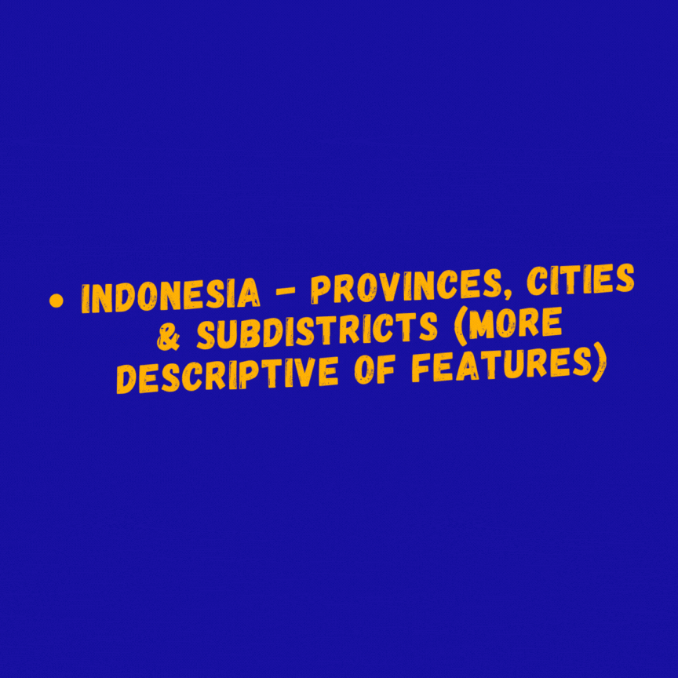
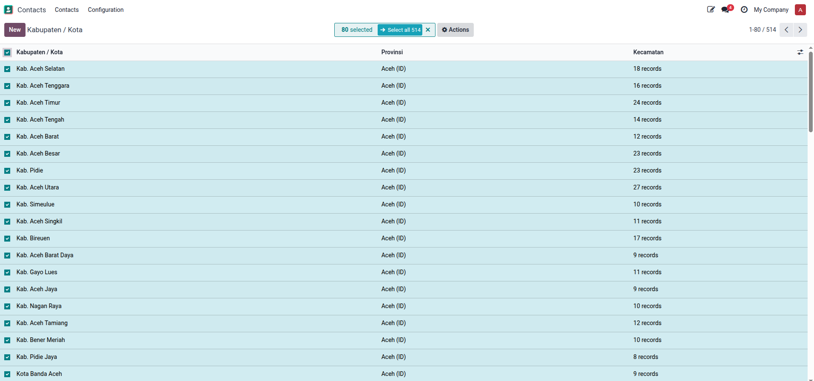
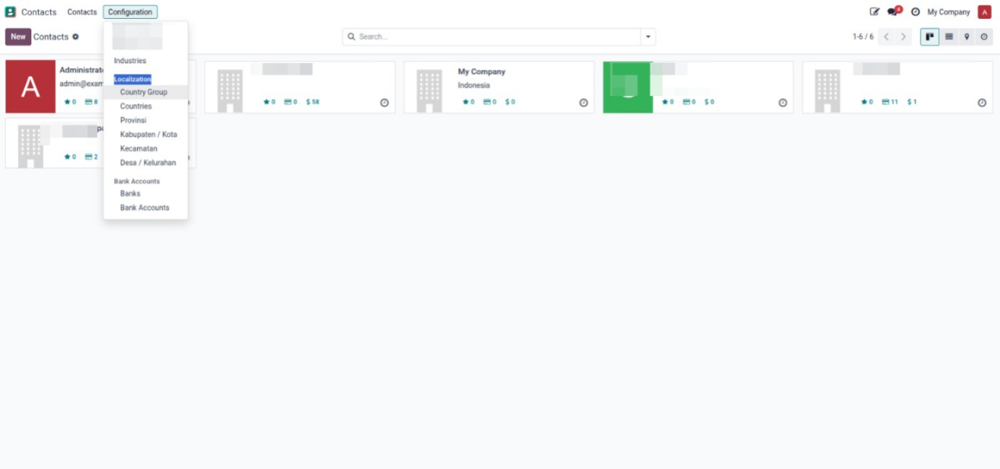

Provinsi • Kabupaten/Kota • Kecamatan • Desa/Kelurahan


Menu Location: Contacts → Configuration → Localization
Based on official Indonesian government administrative data from
Kementerian Dalam Negeri (Kemendagri) and Badan Pusat Statistik (BPS)